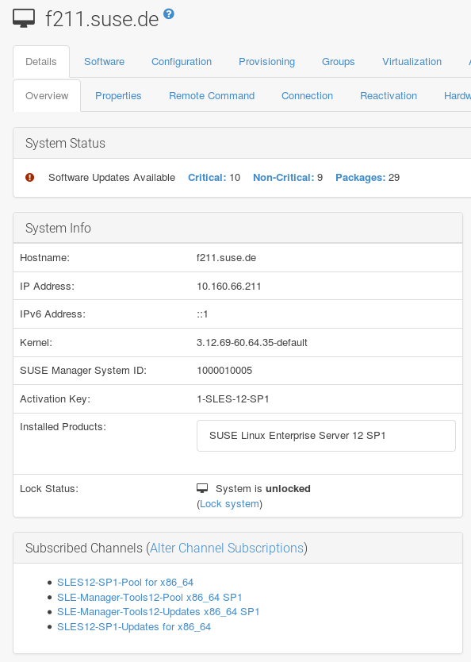
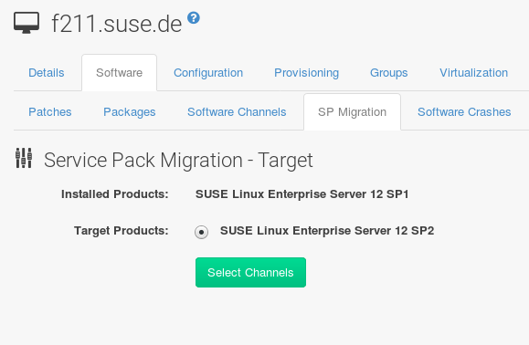
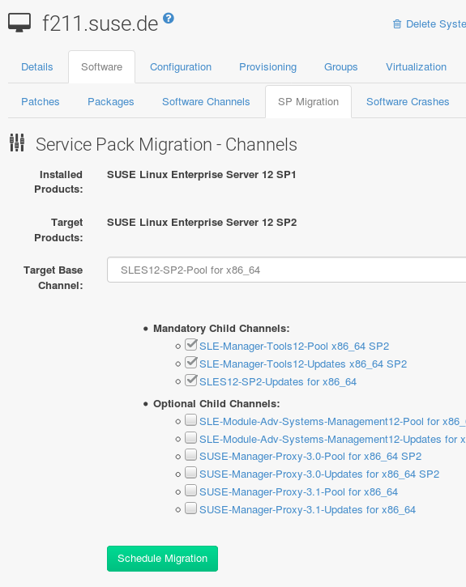
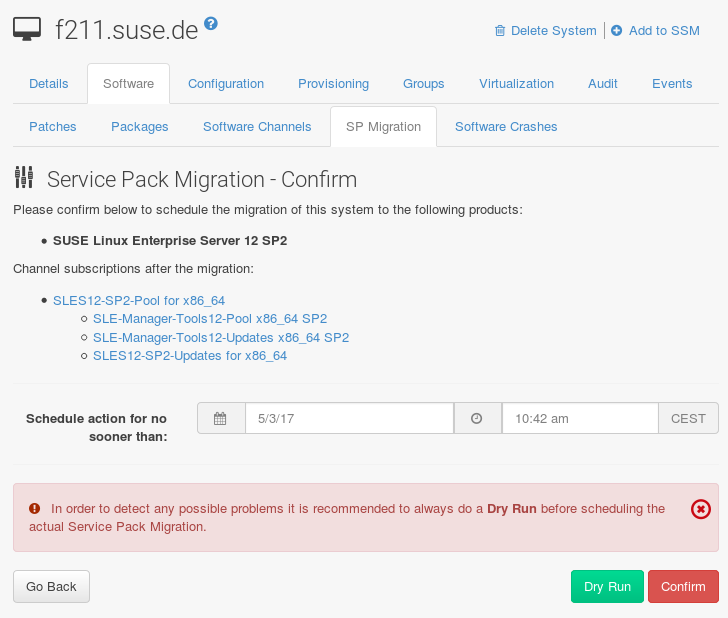

Client Migration
Upgrading from SLE 12 with the latest service pack (SP) to SLE 15 can be automated, but requires some preparation steps.
To upgrade the SP version on SLE 12 (for example, upgrading from SLE 12 or any SLE 12 SPx to SLE 12 SP4) can be fully automated and requires no additional preparation.
Upgrading SLE 12 SPx to Version15
SLE 12 SPx clients can be auto-upgraded to SLE 15 with YaST auto-installation. This also applies for other supported products based on SLE 12. For generally supported SUSE Linux Enterprise upgrade paths, see https://www.suse.com/documentation/sles-15/book_sle_upgrade/data/sec_upgrade-paths_supported.html (SLE Upgrade Guide, Chapter “Supported Upgrade Paths to SLE 15”).
It is important that you migrate the client to the latest available SP first. Upgrade to SLE12 SP4 after December 2018.
|
Auto-Upgrading Salt Minions Currently Not Supported
This procedure will work for traditionally managed systems (system type |
During the procedure, the machine reboots and performs the system upgrade.
The process is controlled by YaST and AutoYaST, not by zypper commands.
|
Only perform this migration procedure on client systems managed by Uyuni servers. For upgrading the Uyuni server itself, see [bp.sp.migration]. This is a viable method for major version upgrades such as an upgrade from SUSE Linux Enterprise 12 to 15. |
System Upgrade Preparation
Make sure your Uyuni and all the clients you want to upgrade have installed all available updates, including the Uyuni tools. This is absolutely necessary, otherwise the system upgrade will fail.
The preparation process contains several steps:
-
Download and save installation media
-
Create an auto-installation distribution
-
Create an activation key
-
Upload an AutoYaST profile
-
On the Uyuni server, create a local directory for the SLE 15 installation media.
-
Download an ISO image with the installation sources, and mount the ISO image on your server:
mkdir /mnt/sle15 mount -o loop DVD1.iso /mnt/sle15
For all distributions you want to upgrade, create a SLE 15 distribution in Uyuni.
-
In the Uyuni WebUI, click .
-
Enter a
Distribution Labelfor your distribution (for example,autumn2018) -
Specify the
Tree Path, which is the root directory of the SLE 15 installation sources (for example,/mnt/sle15). -
For
Base Channel, use the update target distributionSLE-Product-SLES15-Pool for x86_64. -
Confirm with
Create Autoinstallable Distribution.
For more information about Autoinstallation, see [ref.webui.systems.autoinst].
In order to switch from the old SLE 12 SP4 base channel to the new SLE 15 channel, you need an activation key.
-
Go to and click
Create Key. -
Enter a description for your key.
-
Enter a key or leave it blank to generate an automatic key.
-
If you want to limit the usage, enter your value in the
Usagetext field. -
Select the
SLE-Product-SLES15-Pool for x86_64base channel. -
Decide about
Add-On System Types. If in doubt, see https://www.suse.com/documentation/sles-15/book_quickstarts/data/art_modules.html (SLE Modules & Extensions Quick Start). -
Click Create Activation Key.
-
Click the
Child Channelstab and select the required channels. Finish with Update Key.
Create an AutoYaST XML file according to [ap-sample-autoinst-system-upgrade]. For more information about AutoYaST, see [ref.webui.systems.autoinst.ay_intro].
-
Go to and click
Upload Kickstart/Autoyast File. -
Paste the XML content in the text area or select the file to upload and click Create.
-
Add
autoupgrade=1in theKernel Optionsof theDetailstab and click Update. -
Switch to the
Variabletab. -
In the text field
registration_key=enter the key from the preparation above. -
Click Update Variables.
After you have successfully finished this process, you are ready to perform the upgrade. For upgrade instruction, see Synchronizing Target Channels.
|
Synchronizing Target Channels
Before successfully initializing the product migration, make sure that the migration target channels are completely mirrored.
For the upgrade to SUSE Linux Enterprise15, at least the SLE-Product-SLES15-Pool base channel with the SLE-Manager-Tools15-Pool child channel for your architecture is required.
The matching update channels such as SLE-Manager-Tools15-Updates and SLE-Product-SLES15-Updates are recommended.
Watch the mirroring progress in /var/log/rhn/reposync/sles15-pool-x86_64.log.
|
-
Go to the system via and click the name of the system. Then click , and choose the AutoYaST XML profile you have uploaded above.
-
Click Schedule Autoinstallation and Finish.
Next time the machine asks the Uyuni server for jobs, it will receive a reinstallation job which fetches kernel and initrd and writes a new
/boot/grub/menu.lst(containing pointers to the new kernel and initrd).When the machine boots, it will use the Grub configuration and boots the new kernel with its initrd. No PXE boot is required for this process. A shutdown of the machine is initiated as well, effectively 3minutes after the job was fetched.
include::bp_ex_autoinst_system-upgrade.adoc[leveloffset=3]
Migrating SLE 12 or later to version12 SP4
Existing SLE 12 clients (SLE) may be upgraded to SP4 with the SP Migration procedure provided by the WebUI. The same applies for other supported products based on SUSE Linux Enterprise12.
|
Synchronizing Target Channels
Before successfully initializing the product migration, you first must make sure that the migration target channels are completely mirrored.
For the upgrade to SLE 12 SP4, at least the |
-
Direct your browser to the Uyuni WebUI where your client is registered, and login.
-
On the page select your client system from the table.
If there are notification install these updates first to avoid trouble during the migration process.
-
On the system’s detail page select the tab.
 -
From this tab you will see the installed products listed on your client. Select the wanted Target Products (if there is more than one), which is
SUSE Linux Enterprise Server12 SP4.
Then confirm with Select Channels.
 -
Select .

Check the System Status on the system’s details when the migration is done.
If the , install the update now and then check again.
Finally, consider to schedule a reboot.